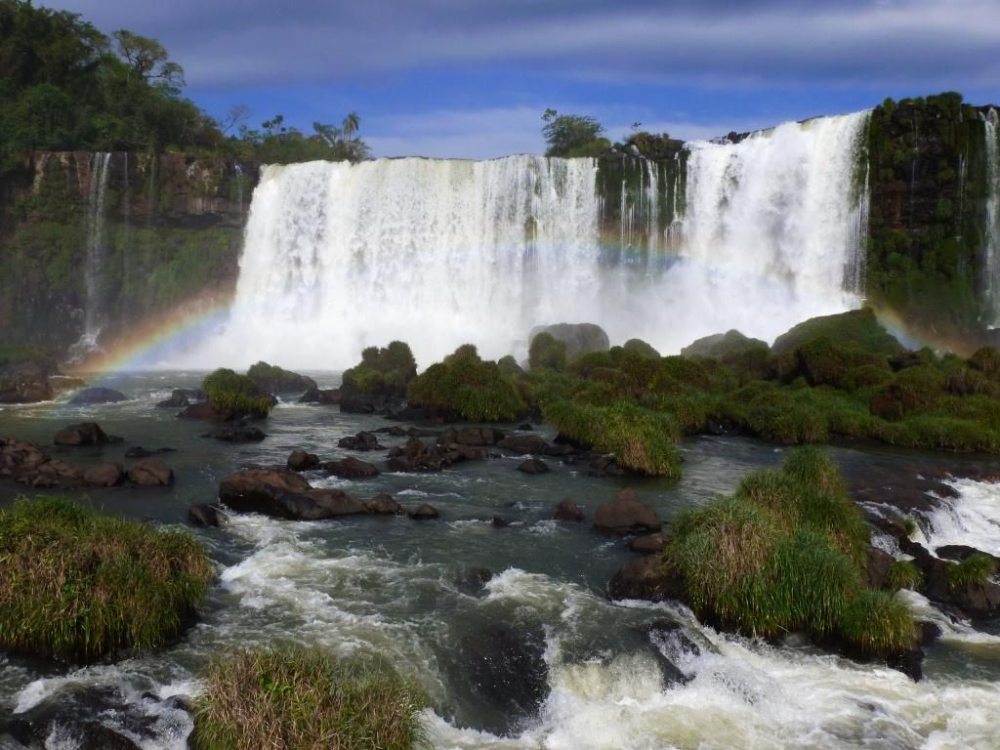

Vùng Tây Nguyên, một thời gọi là Cao nguyên Trung phần Việt Nam là khu vực cao nguyên bao gồm 5 tỉnh, xếp theo thứ tự vị trí địa lý từ bắc xuống nam gồm Kon Tum, Gia Lai, Đắk Lắk, Đắk Nông và Lâm Đồng. Tây Nguyên là một tiểu vùng, cùng với vùng Duyên hải Nam Trung Bộ hợp thành vùng Nam Trung Bộ, thuộc Trung Bộ Việt Nam. Thời Việt Nam Cộng hòa, nơi đây được gọi là Cao nguyên Trung phần. Hiện nay đôi khi được gọi là Cao nguyên Trung Bộ. Trước đó, thời Bảo Đại làm Quốc trưởng, vùng đất này còn được hưởng quy chế riêng là vùng Hoàng triều Cương thổ.
Tây Nguyên là vùng cao nguyên, phía bắc giáp tỉnh Quảng Nam, phía đông giáp các tỉnh Quảng Ngãi, Bình Định, Phú Yên, Khánh Hòa, Ninh Thuận, Bình Thuận, phía nam giáp các tỉnh Đồng Nai, Bình Phước, phía tây giáp với các tỉnh Attapeu (Lào) và Ratanakiri và Mondulkiri (Campuchia). Trong khi Kon Tum có biên giới phía Tây giáp với cả Lào và Campuchia thì Gia Lai, Đắk Lắk và Đắk Nông chỉ có chung đường biên giới với Campuchia. Còn Lâm Đồng không có đường biên giới quốc tế. Nếu xét diện tích Tây Nguyên bằng tổng diện tích của 5 tỉnh ở đây, thì vùng Tây Nguyên rộng khoảng 54.7 nghìn km².[1] Thực chất, Tây Nguyên không phải là cao nguyên duy nhất mà là một loạt cao nguyên liền kề.
 Đó là các cao nguyên Kon Tum cao khoảng 500 mét, Kon Plông, Kon Hà Nừng, Pleiku cao khoảng 800 m, M'Drăk cao khoảng 500 m, Buôn Ma Thuột cao khoảng 500m, Mơ Nông cao khoảng 800–1000m, Lâm Viên cao khoảng 1500m và Di Linh cao khoảng 900–1000 m. Tất cả các cao nguyên này đều được bao bọc về phía Đông bởi những dãy núi và khối núi cao chính là Trường Sơn Nam. Tây Nguyên lại có thể chia thành ba tiểu vùng địa hình đồng thời là ba tiểu vùng khí hậu, gồm Bắc Tây Nguyên (tương ứng với các tỉnh Kon Tum và Gia Lai), Trung Tây Nguyên (tương ứng với các tỉnh Đắk Lắk và Đắk Nông), Nam Tây Nguyên (tương ứng với tỉnh Lâm Đồng). Trung Tây Nguyên có độ cao thấp hơn và nền nhiệt độ cao hơn hai tiểu vùng phía Bắc và Nam. Với đặc điểm thổ nhưỡng đất đỏ Bazan ở độ cao khoảng 500 m đến 600 m so với mặt biển, Tây Nguyên rất phù hợp với những cây công nghiệp như Cà phê, Ca cao, Hồ tiêu, Dâu tằm. Cây điều và cây Cao su cũng đang được phát triển tại đây. Cà phê là cây công nghiệp quan trọng số một ở Tây Nguyên. Tây Nguyên cũng là vùng trồng cao su lớn thứ hai sau Đông Nam Bộ và đang tiến hành khai thác mỏ quặng Bô xít. Tây Nguyên cũng là khu vực ở Việt Nam còn nhiều diện tích rừng với thảm sinh vật đa dạng, trữ lượng khoáng sản phong phú hầu như chưa khai thác và tiềm năng du lịch lớn, Tây nguyên có thể coi là mái nhà của Miền Trung, có chức năng phòng hộ rất lớn. Tuy nhiên, nạn phá rừng, hủy diệt tài nguyên thiên nhiên và khai thác lâm sản bừa bãi chưa ngăn chặn được tại đây có thể dẫn đến nguy cơ làm nghèo kiệt rừng và thay đổi môi trường, sinh thái.
Vùng đất Tây Nguyên từ xưa vốn là vùng đất tự trị, địa bàn sinh sống của các bộ tộc thiểu số, chưa phát triển thành một quốc gia hoàn chỉnh. Do đất rộng, người thưa, các bộ tộc thiểu số ở đây thỉnh thoảng trở thành nạn nhân trước các cuộc tấn công của vương quốc Champa nhằm cướp bóc nô lệ. Sau khi Nguyễn Hoàng xây dựng vùng cát cứ phía Nam, các chúa Nguyễn ra sức loại trừ các ảnh hưởng còn lại của vương quốc Champa và cũng phái một số sứ đoàn để thiết lập quyền lực ở khu vực Tây Nguyên. Các bộ tộc thiểu số ở đây dễ dàng chuyển sang chịu sự bảo hộ của người Việt, vốn không có thói quen buôn bán nô lệ. Tuy nhiên, các bộ tộc ở đây vẫn còn manh mún và mục tiêu của các chúa Nguyễn nhắm trước đến các vùng đồng bằng, nên chỉ thiết lập quyền lực rất lỏng lẻo ở đây. Trong một số tài liệu vào thế kỷ 16, 17 đã có những ghi nhận về các bộ tộc Mọi Ðá Vách (Hré), Mọi Hời (Hroi, Kor, Bru, Ktu và Pacoh), Mọi Ðá Hàm (Djarai), Mọi Bồ Nông (Mnong) và Bồ Van (Rhadé Epan), Mọi Vị (Raglai) và Mọi Bà Rịa (Mạ) để chỉ các bộ tộc thiểu số sinh trú ở vùng Nam Tây Nguyên ngày nay. Tuy có sự ràng buộc lỏng lẻo, nhưng về danh nghĩa, vùng đất Tây Nguyên vẫn thuộc phạm vi bảo hộ của các chúa Nguyễn. Thời Tây Sơn, rất nhiều chiến binh thuộc các bộ tộc thiểu số Tây Nguyên gia nhập quân Tây Sơn, đặc biệt với đội tượng binh nổi tiếng trong cuộc hành quân của Quang Trung tiến công ra Bắc xuân Kỷ Dậu (1789). Sang đến triều Nguyễn, quy chế dành cho Tây Nguyên vẫn không thay đổi nhiều, chủ yếu người Việt vẫn chú ý khai thắc miền đồng bằng nhiều hơn, đặc biệt ở các vùng miền Đông Nam Bộ ngày nay, đã đẩy các bộ tộc thiểu số bán sơn địa lên hẳn vùng Tây Nguyên (như trường hợp của bộ tộc Mạ). Sau khi người Pháp nắm được quyền kiểm soát Việt Nam, họ đã thực hiện hàng loạt các cuộc thám hiểm và chinh phục vùng đất Tây Nguyên. Năm 1888, một người Pháp gốc đảo Corse tên là Mayrena sang Đông Dương, chọn Dakto làm vùng đất cát cứ và lần lượt chinh phục được các bộ lạc thiểu số. Ông ta thành lập vương quốc Sédan có quốc kỳ, có giấy bạc, có cấp chức riêng và tự mình lập làm vua tước hiệu Marie đệ nhất. Nhận thấy được vị trí quan trọng của vùng đất Tây Nguyên, nhân cơ hội Mayrena về châu Âu, chính phủ Pháp đã đưa công sứ Quy Nhơn lên “đăng quang” thay Mayrena. Vùng đất Tây Nguyên được đặt dưới quyền quản lý của Công sứ Quy Nhơn. Sau đó vài năm, thì vương quốc này cũng bị giải tán. Năm 1891, bác sĩ Alexandre Yersin mở cuộc thám hiểm và phát hiện ra cao nguyên Liang Biang. Ông đã đề nghị với chính phủ thuộc địa xây dựng một thành phố nghỉ mát tại đây. Nhân dịp này, người Pháp bắt đầu chú ý khai thác kinh tế đối với vùng đất này. Tuy nhiên, về danh nghĩa, vùng đất Tây Nguyên vẫn thuộc quyền kiểm soát của triều đình Đại Nam. Vì vậy, năm 1896, khâm sứ Trung kỳ Boulloche đề nghị Cơ mật viện triều Nguyễn giao cho Pháp trực tiếp phụ trách an ninh tại các cao nguyên Trung kỳ. Năm 1898, vương quốc Sédan bị giải tán. Một tòa đại lý hành chính được lập ở Kontum, trực thuộc Công sứ Quy Nhơn. Năm 1899, thực dân Pháp buộc vua Đồng Khánh ban dụ trao cho họ Tây Nguyên để họ có quyền tổ chức hành chính và trực tiếp cai trị các dân tộc thiểu số ở đây. Năm 1900, Toàn quyền Doumer đích thân thị sát Đà Lạt và quyết định chọn Đà Lạt làm thành phố nghỉ mát. Vùng đất cao nguyên Trung kỳ (Tây Nguyên) hoàn toàn thuộc quyền cai trị của chính quyền thực dân Pháp. Năm 1907, tòa đại lý ở Kontum đổi thành tòa Công sứ Kontum, cùng với việc thành lập các trung tâm hành chính Kontum và Cheo Reo. Những thực dân người Pháp bắt đầu lên đây xây dựng các đồ điền đồng thời cũng ngăn cấm người Việt lên theo, trừ số phu họ mộ được.
| Tên tỉnh | Tỉnh lỵ | Diện tích(km²) | Dân số |
|---|---|---|---|
| Kon Tum | Thành phố Kon Tum | 9.674,20 | 540.438 |
| Gia Lai | Thành phố Pleiku | 15.510,80 | 1.513.847 |
| Đắk Lắk | Thành phố Buôn Ma Thuột | 13.030,50 | 1.869.322 |
| Đắk Nông | Thành phố Gia Nghĩa | 6.509,29 | 622.168 |
| Lâm Đồng | Thành phố Đà lạt | 9.783,20 | 1.296.906 |